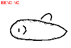
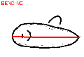
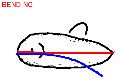
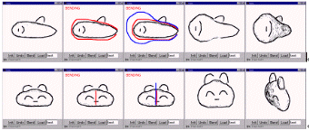

[1.Camera]
[2.Create]
[3.Paint]
[4.Extrude]
[5.Cut]
[6.Smooth]
[7.Bend]
[8.File]
Step 7: Bending
1
2
3
4
5
6
1) Create an object.
2) Press "Bend" button to start the bending operation.
3) Draw a reference stroke by left-button dragging.
4) Draw a target stroke by left-button dragging.
5-6) Rotate the model to see the result.

This operation can deform the model in many different ways.
Complicated strokes can generate unintuitive results.
When you have practiced enough, go to
step 8.
If the program works strangely, close the applet window and
restart the applet.
Copyright (C) 1998
Takeo Igarashi